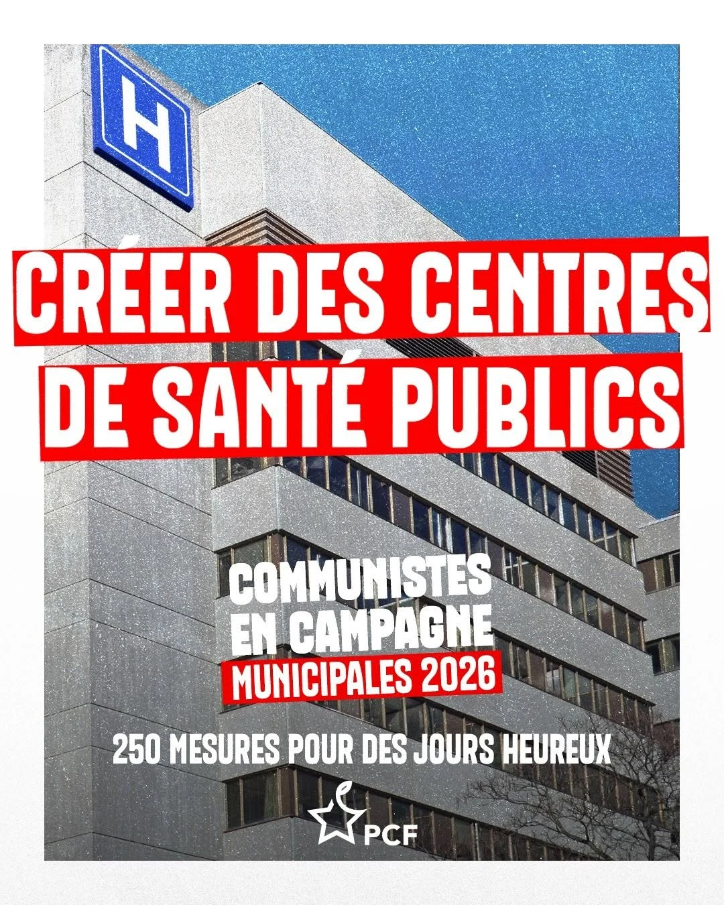

Publication relayée par le PCF 79
Le PCF propose de développer les centres de santé publics
Date de mise à jour indiquée par Facebook · 4 février 2026
Texte de la publication · PCF national
🩺 Renforcer et développer les centres de santé publics.
Aujourd’hui, des millions de personnes peinent à accéder à un médecin, à un suivi régulier ou à des soins de prévention.
Les déserts médicaux s’étendent, les urgences débordent, et l’accès aux soins dépend trop souvent du lieu où l’on vit ou de ses revenus.
➡️ Pour répondre à l’urgence sanitaire, les communistes veulent :
✅ développer des centres de santé municipaux ou intercommunaux, ou des Groupements d’intérêt public avec le département ou la région
✅ salarier des médecins et constituer des équipes pluridisciplinaires (médecins, infirmier·es, sages-femmes, psychologues…)
✅ renforcer les actions de prévention et le suivi de proximité
✅ travailler en lien étroit avec les hôpitaux publics
✅ assurer la présence de gynécologues pratiquant l’IVG dans les centres de santé municipaux
La santé est un droit, pas un marché.
En 2026, faisons le choix de communes qui protègent, soignent et préviennent, au service des habitant·es, pas des logiques de profit.
Communistes en campagne, Municipales 2026, retrouvez nos 250 propositions en commentaire.

Sources
PCF national · publication relayée par le PCF 79 · bibliothèque Facebook · AR-0002-FB-00875
À lire aussi · Le PCF défend l’égalité d’accès aux soins sur tous les territoires